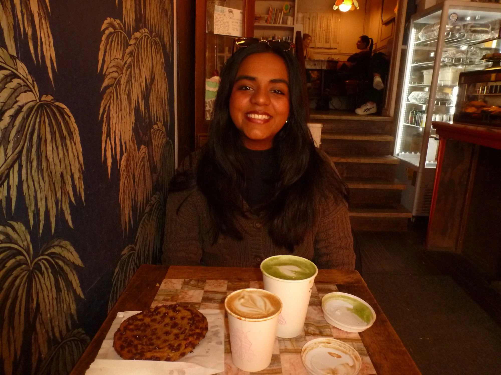

About
Product thinker
who ships.
I graduated from UW–Madison with a double major in Computer Science & Data Science. Software engineer by profession, but product builder and thinker by default. I see gaps in how products are designed, in how communities are built, in who gets access to what, and my instinct is to close them.
Role
Software Engineer @ Fortune 500
Education
B.S. Computer Science & Data Science, UW-Madison

Fun facts

Avid matcha lover
Avid traveller